逐轮看：数据中包含谁的贡献？
选择算法并逐步前进。块号 C 与贡献者 X 是两件事；箭头是逻辑传输，不表示所有rank锁步执行。
七种基础原语：读哪里，写哪里？
direct变体的省略条件与指针交换见正文第7节；接口名称不能替代模板位和连接状态的判断。
NCCL 2.12.12 图解与原语内部逻辑
本讲解与仓库基线 04832308d0885226169b9376c1ba4f17b0cb6484 对应。图与源码一同下载，SVG无需网络；另有可双击打开的 离线图解，可逐轮观察结果传播。每个函数内部步骤 将文字说明定位回具体定义。
图中的“传输轮”“块”“完成”有明确层次：逻辑块可以被原语继续切成slice，slice占若干FIFO step，后端还可拆成网络请求/数据包。图中一条箭头不等于一个QP、一个WQE或一条CUDA指令。下面的4-rank示例假设环顺序为 0→1→2→3→0。
1. 先定位：谁做调度，谁真的搬数据
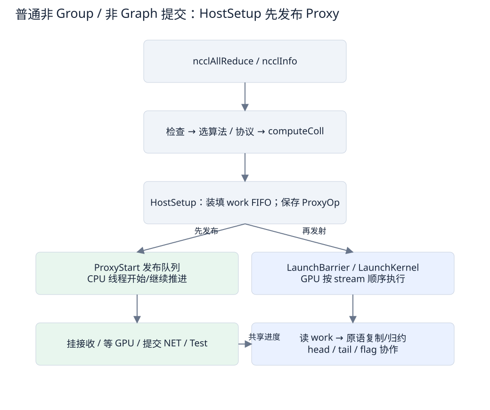
普通、非Group、非CUDA Graph路径从 ncclEnqueueCheck 进入。computeColl 同时写出两份计划：ncclWorkElem 交给GPU执行数据运算，ncclProxyOp 交给CPU代理推进网络。HostSetup把模板展开到实际channel：bid 表示本次操作的片段编号，channelId 表示实际通道槽，二者不一定相同。
这里必须按调用点辨认先后：HostSetup调用 ncclLaunchProxy→ncclProxyStart 发布队列，随后才进入LaunchBarrier/LaunchKernel。Proxy线程可以先准备接收或可写空间；发送数据时仍要等GPU就绪。邻近旧英文注释提到“发射kernel后启动代理”，不能用它推翻实际调用顺序。
ncclLaunchKernel 排入CUDA stream不等于GPU已经跑到该kernel，更不等于网络传输完成。图捕获模式把HostSetup放入图节点，在每次replay执行，不能照搬普通提交时CPU立即调用的时间轴。
2. 数据分片：先分地址，再按协议推进
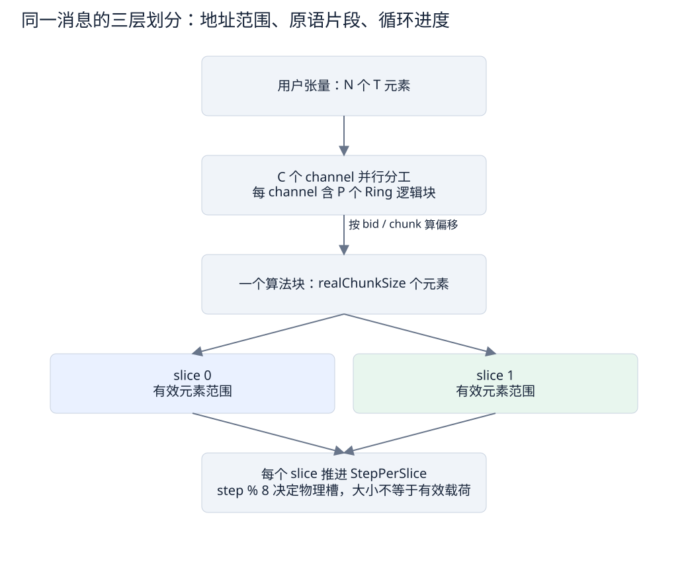
先分清三个问题：
| 层次 | 回答什么 | 关键变量 |
|---|---|---|
| 算法地址划分 | 哪个channel负责哪些用户元素？环上先处理哪个块？ | bid、nChannels、nranks、gridOffset、chunk、realChunkSize |
| 原语片段 | 这次组合收发/归约分几片流水？ | SlicePerChunk、sliceSize、offset、nelem |
| 循环缓冲进度 | 可否写/读？复用哪一槽？ | step、StepPerSlice、head、tail、step%8 |
“把1GiB平均分成16份”只描述最外面的一层，还没描述环中块次序、原语片数、尾部对齐和缓冲复用。
2.1 主机computeColl怎样算协议容量
stepSize = buffSizes[protocol] / NCCL_STEPS，这里是字节，本版 NCCL_STEPS=8。Simple+Ring从API传入chunkSteps和sliceSteps；其他组合在这一步先按1处理。chunkSize = stepSize × chunkSteps。
Ring AllReduce使用 chunkSteps=4、sliceSteps=2，所以协议模板是 ProtoSimple<2,2>：一个算法原语块有两个slice，每片推进两步。它不意味着每片必须写满两个物理step的全部容量。
LL的16字节行只装8字节有效载荷，LL128的128字节行装120字节。因此主机计算覆盖用户张量的 chunkEffectiveSize 时要扣flag开销。若不扣，Proxy会少算轮数。
nLoops = ceil(nBytes / (nChannels × nchunksPerLoop × chunkEffectiveSize))
Proxy.nsteps = nstepsPerLoop × nLoops × chunkSteps
Ring AllReduce: nchunksPerLoop=P, nstepsPerLoop=2(P-1)
AG/RS的 nBytes 是P段总规模；AG的设备count还已变成字节数。不能把不同API的公开count直接塞进同一式子。
2.2 设备Ring AllReduce怎样计算真实地址
Proto::calcBytePerStep()/sizeof(T) 已把有效字节转成T元素数。Simple设备循环先算本轮 realChunkSize，再按worker搬运粒度对齐：
r = min(chunkSize, ceil((size-gridOffset)/(C×P)))
r = roundUp(r, (nthreads-32)×8/sizeof(T))
Simple offset = gridOffset + bid×P×r + chunk×r
LL/LL128 offset = gridOffset + (chunk×C+bid)×r
有效元素 nelem = min(r, size-offset)，进入原语后下限归零
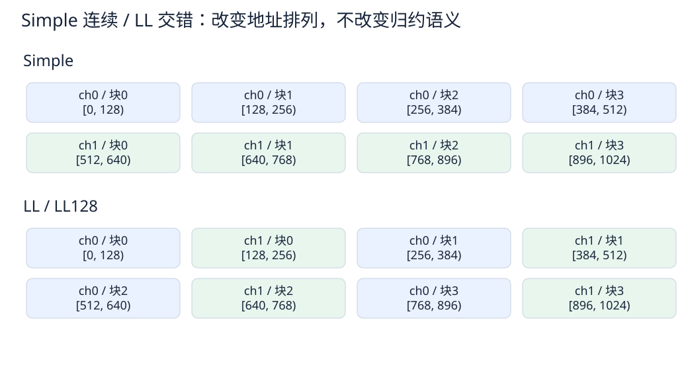
上图只比较相同假设块长128时两种地址排列，不表示同一调优配置下LL与Simple必然得到相同块长。LL/LL128实际还按自身最小grain计算。Simple把同channel的P块连在一起，LL/LL128按块号与channel交错；两者都应恰好覆盖有效用户区间。
2.3 一套可手算的Simple示例
为了验证公式，固定已选好的 P=4、C=2、T=float、nthreads=96，并用16KiB物理Simple缓冲作尺寸示例。这是固定内部变量的教学计算，不预测默认调度是否会给小消息选择两个channel，也不是要求设置生产缓冲大小。
| 量 | 计算 | 结果 |
|---|---|---|
| 一物理step | 16KiB/8 | 2048B=512float |
| 算法块上限 | 512float×4 | 2048float |
| 对齐粒度 | (96-32)×8/4 | 128float |
| N=1024时本轮块长 | ceil(1024/(2×4))，再对齐 | 128float |
| channel0 | 块0～3 | [0,512) |
| channel1 | 块0～3 | [512,1024) |
| 一原语slice有效长度 | max(ceil(128/(16×2))×16,512×2/32) | 64float=256B |
| 一个原语块 | 2个slice | 各推进2step，合计4step |
这个例子中每slice实际只搬256B，仍按2个step更新协议进度。进度跨度、物理容量、有效字节数是三件事。 nLoops=1，环每方向需要6次块传输，Proxy预算是6×4=24step。设备代码有7个组合原语调用位置：初始send、两次recvReduceSend、一次最终归约兼首次结果转发、两次recvCopySend、最后recv；因为有只发和只收端点，不能把7简单乘4当作每方向步数。
2.4 尾块和空块为何不能直接return
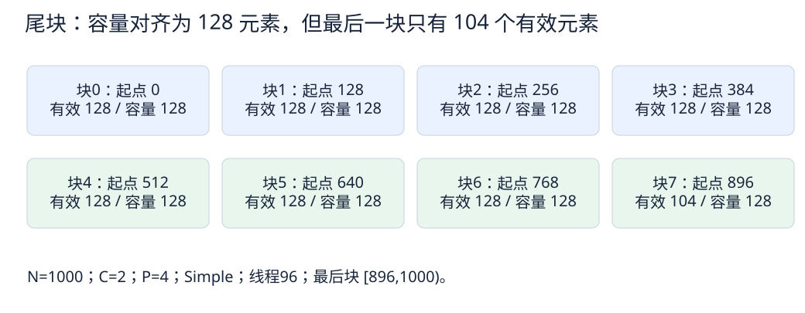
当N=1000，其余假设不变，r仍对齐成128。最后块从896开始，只能读104元素。算法容量没有变，实际复制必须截短；若某块起点已超出N，原语将非正nelem归零，但仍按约定片数等待/发布，保持双方step一致。
gridOffset 每轮按基准 loopSize=C×P×chunkSize 前进；尾轮的r可缩小。不能把尾轮r反过来改写前面循环已经确定的步进。源码检查工具附带多种N的地址覆盖核对，确保没有漏元素或重复覆盖。
3. 通信原语是“源→计算→目标”的组合
API里的AllReduce是全组语义；原语 recvReduceSend 是当前GPU、当前线程组、当前数据范围的一次组合动作。它不会单独发射一个新kernel。
| 原语 | 源 | 中间操作 | 目标 |
|---|---|---|---|
| send | 本地input | 读/必要preOp | 下游 |
| recv | 上游 | 读 | 本地output |
| copySend | 本地input | 一次读、多目标写 | output、下游 |
| recvCopySend | 上游 | 不再加本地input | output、下游 |
| recvReduceSend | 上游、本地input | 归约 | 下游 |
| recvReduceCopy | 上游、本地input | 归约、必要postOp | output |
| recvReduceCopySend | 上游、本地input | 归约、必要postOp | output、下游 |
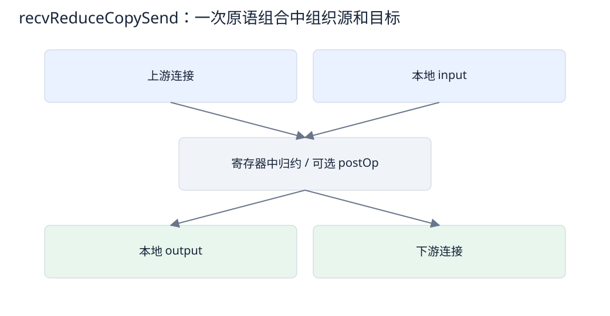
所有七种源/目标图都在 图文件目录 和离线图解中。名称里的Reduce表示合并本地原始贡献或多个接收源；Copy表示保留本地结果；Send表示同时向连接目标输出。
3.1 Simple模板参数逐位拆解
genericOp<DirectRecv,DirectSend,Recv,Send,SrcBuf,DstBuf> 的后两位选择Input/Output或-1，-1表示没有这类本地源/目标；不是远端rank=-1。
| 包装 | 模板实参 | 数据含义 |
|---|---|---|
| send | <0,0,0,1,Input,-1> |
仅本地原始输入到下游 |
| recv | <0,0,1,0,-1,Output> |
仅接收并保留输出 |
| recvReduceSend | <0,0,1,1,Input,-1> |
收到上游，加本地输入，继续发 |
| recvReduceCopy | <0,0,1,0,Input,Output> |
收到上游，加本地输入，保留输出 |
| recvReduceCopySend | <0,0,1,1,Input,Output> |
一次加载归约，写本地及下游 |
| directRecvCopySend | <1,1,1,1,-1,Output> |
可直接接收/发送已完成结果，无本地输入归约 |
| directRecvReduceCopySend | <0,1,1,1,Input,Output> |
此包装的direct只对发送部分生效；接收仍按其普通归约路径 |
最后一行尤其容易被函数名误导：源码有注释“Direct is only for the send part”，不能把整个名字理解成所有内存访问都绕开中间缓冲。
3.2 归约为何要区分preOp和postOp
PreMulSum需要每个原始输入乘一次scale。一个输入沿环已经变成部分和后，不应再每跳重复乘scale。整数Avg则应等所有贡献相加完成才做除法，若每个输入先除会提前截断。
原语把实际 srcs/dsts 交给 ReduceOrCopyMulti，模板Src/Recv/Send/Dst决定多少个源和目标。先在寄存器中合并源，再把同一个结果写多个目标，避免“归约写临时数组→另起kernel读取再转发”。这是融合的来源。
4. Simple内部：不是所有线程执行同一份工作
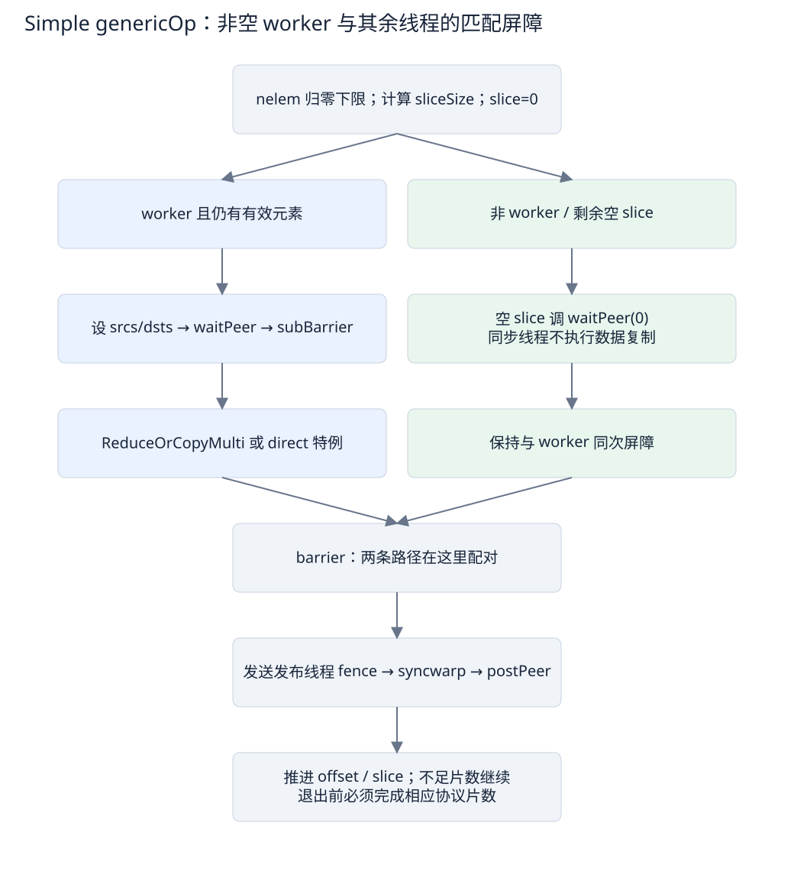
按源码顺序阅读 genericOp：
- 把nelem下限归零，计算sliceSize与有效片段上限。小尾块会缩小实际搬运长度。
- worker路径负责设置本地input/output指针、等连接、组装srcs/dsts。
waitPeer只由相应Wait角色真的执行流控/选地址。subBarrier让worker看见已经准备好的指针表。- 有三种数据路径：direct接收的源与目标重合时省复制；直接读的空发送特例；普通多源多目标融合路径。
- 所有本组线程在匹配的barrier会合。非worker从另一个循环进入同一屏障，不能把它们当作提前退出。
- 发送发布角色执行必要的系统fence，warp同步后postPeer，更新对外可见进度。
- offset和slice前进。worker没有数据后也要完成剩余空slice的同步/发布，直到约定片数结束。
为什么把有效worker循环和剩余空片循环拆开？源码注释给出的目标是把worker热路径里的“是不是worker”“这片是否为空”重复判断移出循环，降低每个有效slice的分支开销；并非删除空slice的协议职责。
4.1 96线程的具体角色例子
对Ring 1收1发、nthreads=96，构造器会保留32个非worker线程，nworkers=64。同步角色按 ThreadPerSync=8 分配。下面只列有职责的代表线程；不是每个线程都有Wait/Post位。
| 线程 | g/index | 职责 |
|---|---|---|
| tid0 | g0/index0 | RoleWaitRecv |
| tid1 | g0/index1 | RoleInput，提供本地输入地址 |
| tid8 | g1/index0 | RoleWaitSend |
| tid9 | g1/index1 | RoleOutput，提供本地输出地址 |
| tid80 | g10/index0 | RolePostRecv |
| tid88 | g11/index0 | RolePostSend |
Wait线程属于worker集合，还参与搬运。最后warp中的Post线程帮助把数据搬运与发布开销重叠。其他模板邻居度/线程数会改变有效角色；不能把这组具体tid推广到所有原语。
4.2 waitPeer的不等式
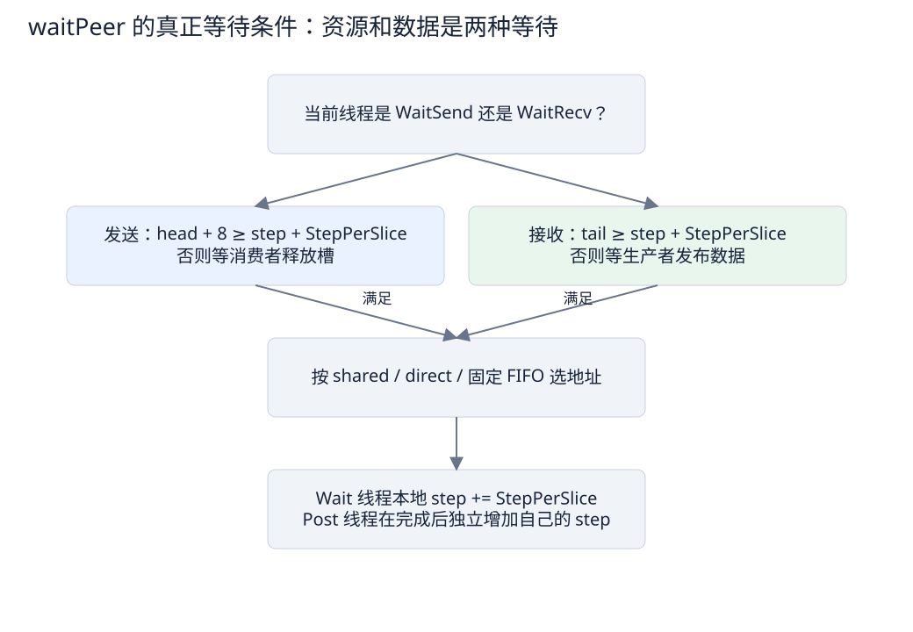
- 发送：
head+8 >= step+StepPerSlice才有空间；head由消费方推进。 - 接收：
tail >= step+StepPerSlice才能读取；tail由生产方发布。 - 循环中刷新缓存，并周期检查abortFlag，使异常时不必永久自旋。
- shared模式从offsFifo取得字节偏移；转成T*偏移时除sizeof(T)。普通模式使用
(step%8)×stepSize。
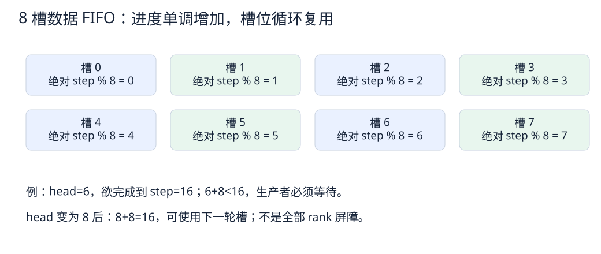
head/tail不是全组屏障：一个连接可以因为自己的消费者慢而阻塞，与另一条独立连接的进度不同。
4.3 为什么waitPeer加step，postPeer也加step，却没有翻倍
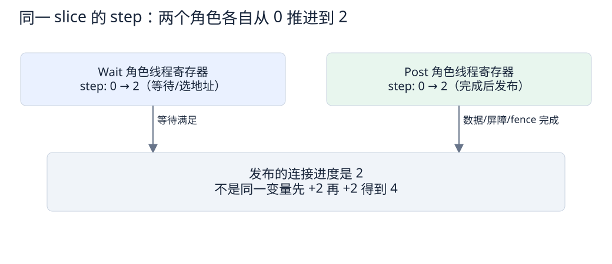
step 是原语对象在每个线程寄存器中的独立成员。Wait角色在waitPeer更新自己的step；Post角色在postPeer更新自己的step再写共享进度。它们通常不是同一个角色线程，也不是同一个内存变量从0连续加两次。析构时Post角色把最终step写回连接，下一操作接着用。
4.4 barrier、volatile、fence分别保证什么
| 机制 | 本处职责 | 不能替代什么 |
|---|---|---|
| volatile加载/存储 | 编译器应按协议重新观察共享进度 | 不等于跨线程会合 |
| subBarrier/barrier | 参与组线程按相同阶段会合、看到指针/数据准备 | 不独立证明NIC已经发送完成 |
| threadfence_system | 发送进度发布前满足对应数据写的系统可见性顺序 | 不代表其他GPU已经消费 |
| head/tail/flag | 生产消费双方的协议进度 | 不等于API返回或CUDA事件完成 |
5. LL：用每16字节行的两个flag等待载荷
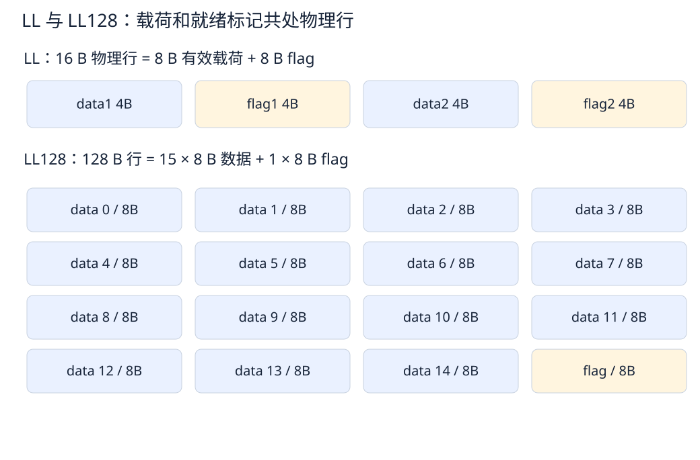
LL一行按 data1,flag1,data2,flag2 排列。接收者必须同时看到两个flag等于 recvStep+1，才取出两个data组成8字节有效值。对端可能尚未写完整行，看到其中一个新flag不足以接受另一半旧数据。
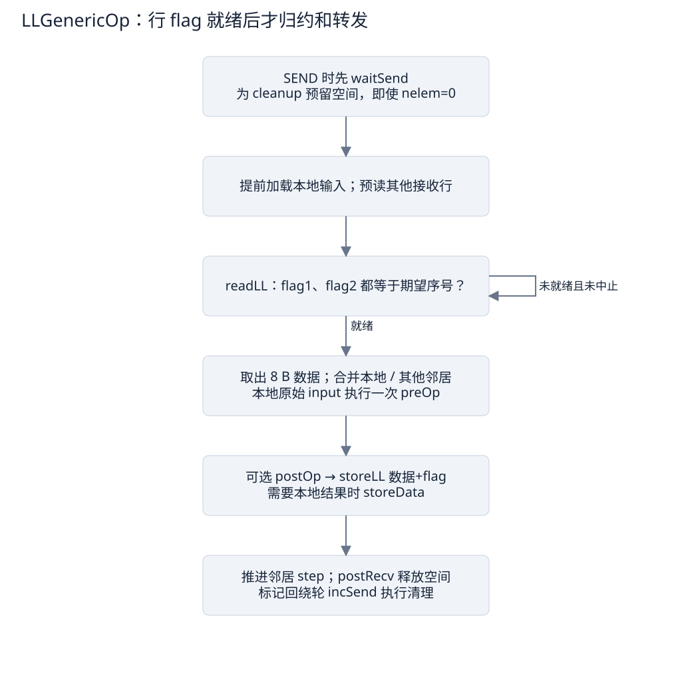
LLGenericOp内部按线程分配行：offset=tid，每轮offset增加nthreads；用户元素地址按 eltPerTrip=nthreads×EltPerLine 前进。本地加载先Begin，等待接收行时可以与加载重叠，再Finish取值。多接收邻居时逐个检查对应行并合并，postOp仅在要求的最终输出点执行。SEND把数据和本轮flag写到下游；DST再保留用户结果。
行内flag解决“这一行是否到达”，head仍负责“旧行能不能重写”。两种控制缺一不可。标记回绕时incSend清理未覆盖行，Proxy在清理轮可能需传整step，不能按本次有效用户字节过早裁掉。
本版代码依赖其明示的数据/flag布局与网络写入假设；一次128-bit汇编加载/存储并不意味着任意观察者都获得整行128-bit原子性。
6. LL128：warp协作、120/128有效率和加载重叠
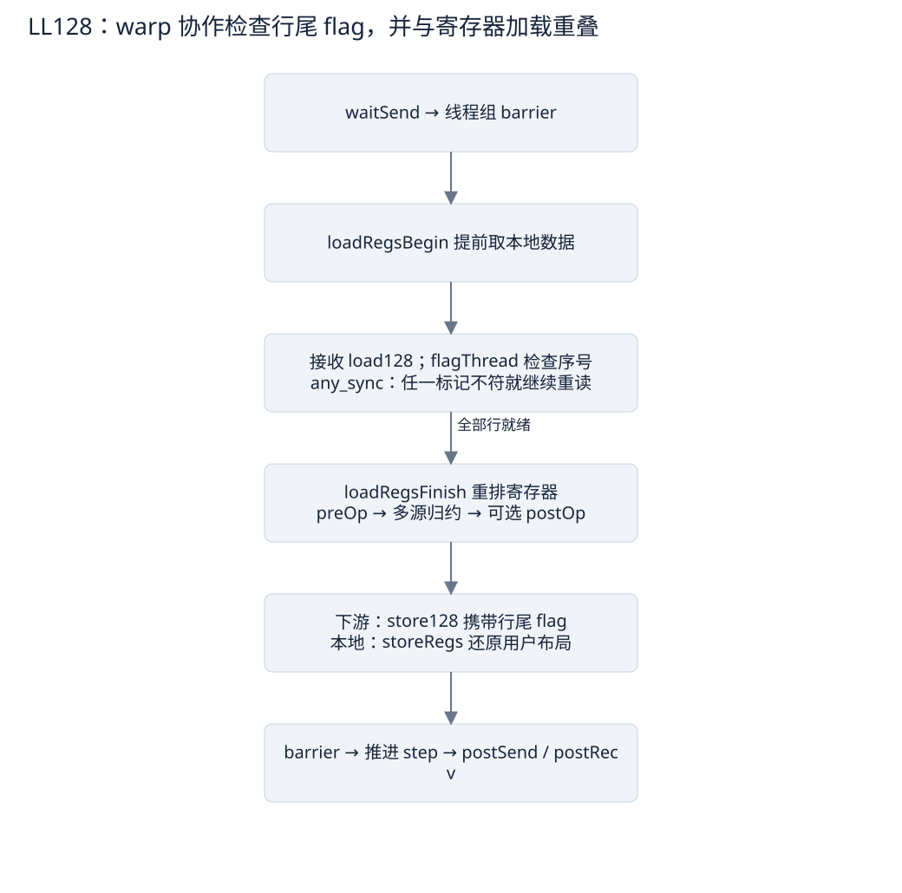
LL128每行16个uint64：15个数据字、1个flag。flagThread负责相应标记检查和写出，warp通过 __any_sync 决定是否仍需重读。任一负责标记的线程看到旧序号，整轮不能直接继续消费。
loadRegsBegin在满足16B对齐时直接预取寄存器；不对齐时借共享内存暂存覆盖区域。loadRegsFinish延后重排，尽量把重排依赖停顿与等待接收隐藏。随后逐源归约、可选postOp，再store128连同行尾flag发出；本地结果经storeRegs恢复用户布局。
GenericOp按warp分配DataEltPerSlice，通过nwarps跨步处理后续片段。结束时barrier，更新收发step，再postSend/postRecv。postSend用的是其源码中的fence与tail路径；NET代理在系统内存LL128发送时还会检查行flag。不要把Simple的同步图原样套到LL128。
7. direct、GPU P2P和GDR的逻辑不能合并理解
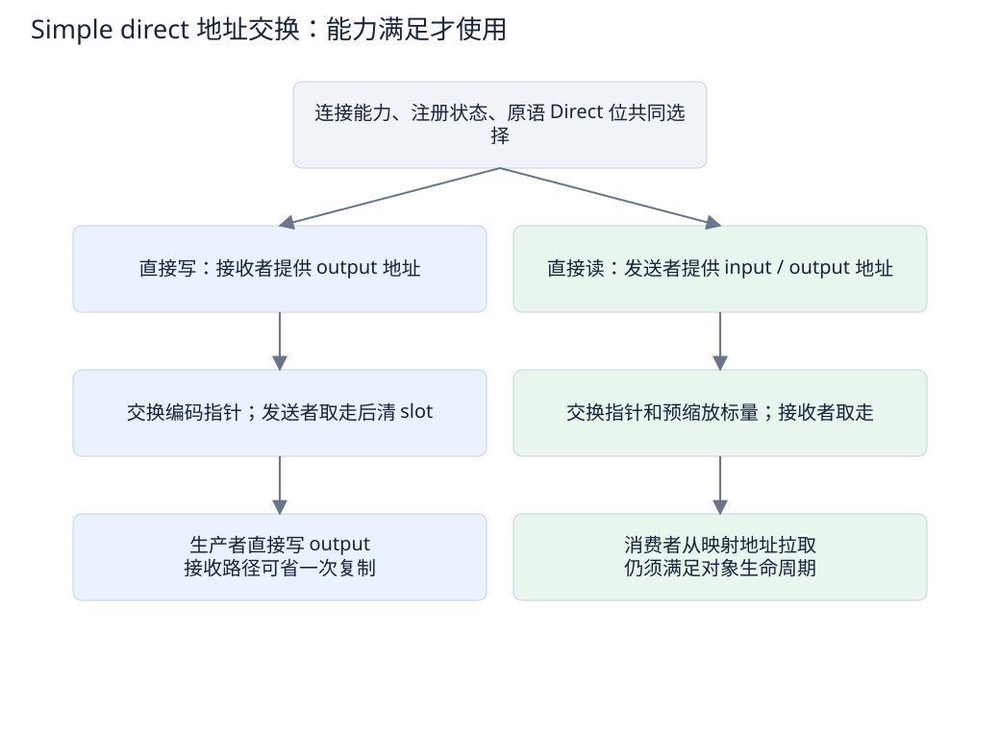
Simple的setDataPtrs先确定四种角色：recvProvider/sendAcceptor用于直接写，sendProvider/recvAcceptor用于直接读。指针交换槽用nullptr表示空；因此编码时与slot地址异或，允许合法空指针与“槽尚未提供”区分。使用方取走后清槽，提供方才可放下一轮地址。
直接读还要交换原始输入的缩放参数。标量拆成两部分，每部分额外设置非零有效标记，以便零标量也能与“未写入”区分。接收者重组标量，避免读取到旧参数或对原始贡献漏做preOp。
waitPeer只在具体谓词满足时省掉部分等待：DirectRecv && Src && DirectRead 与 DirectSend && (DirectRead|DirectWrite) 等；不是任何direct函数都无条件跳过同步。
LL/LL128通过 PrimitivesWithoutDirect 把同名direct调用退化到普通协议原语。Simple的 directRecvReduceCopySend 也只让发送部分direct。函数名是组合接口，不是硬件能力证明。
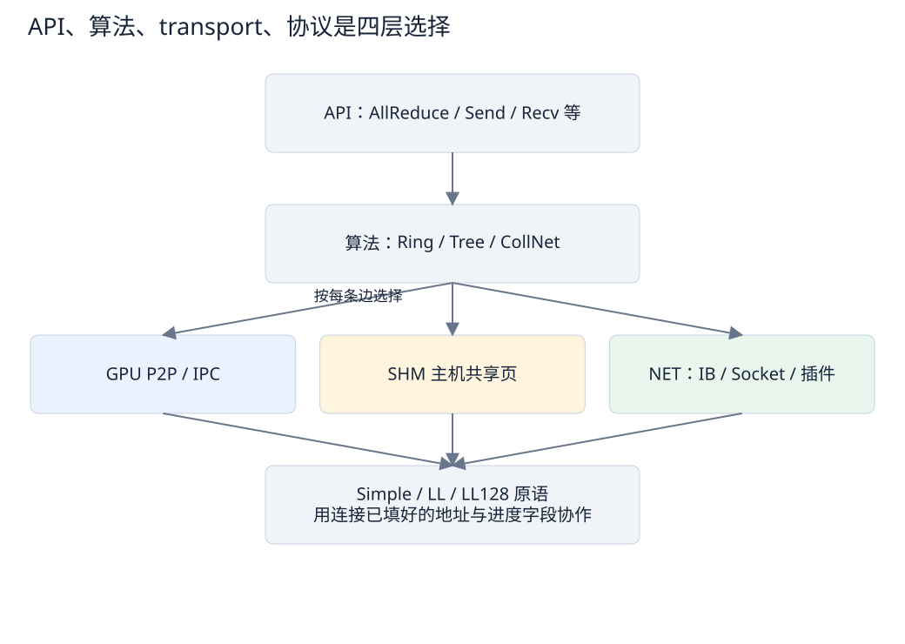
同机GPU P2P依赖可访问映射；跨进程通过CUDA IPC建立本进程地址。SHM使用GPU可映射的主机共享页。NET若支持GDR，NIC可访问注册GPU缓冲，但本版内置IB的WQE提交/CQ轮询仍在CPU Proxy中。GDRCopy是CPU映射显存的小数据/同步优化，不能与GPUDirect RDMA视作一个接口。
8. Ring AllReduce：把每个块的来源追到底
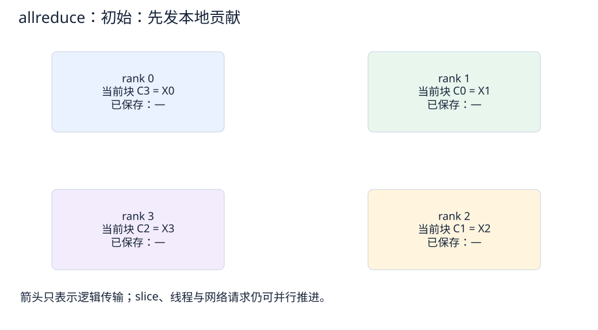
用 Xr(Ck) 表示rank r输入中第k块。r首先发送C(r-1)，每跳接收者把自己的同一块加入部分和。经过P-1个归约传输轮，每个rank完成自己内部环编号的块。
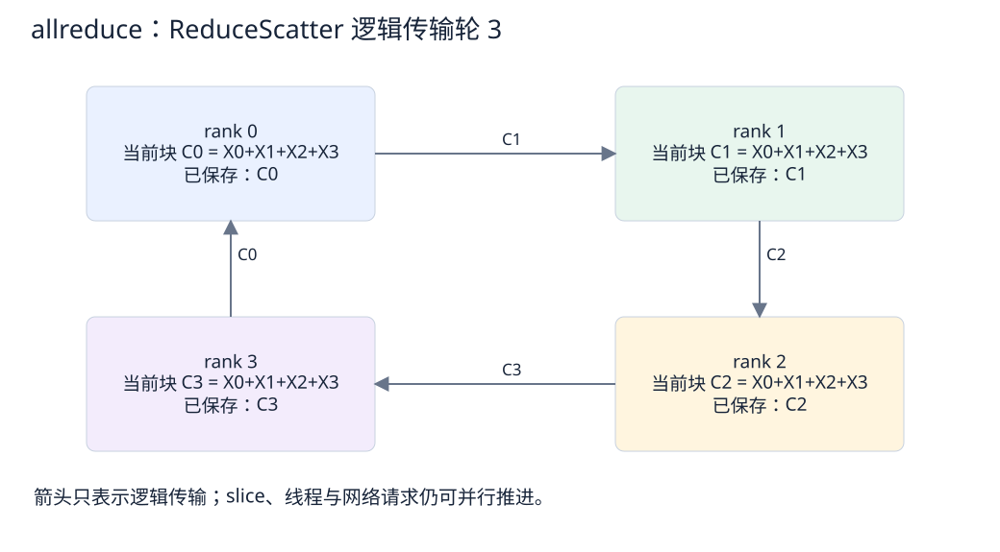
示例rank0的源码调用顺序如下。它描述7个原语调用点，不是7个独立kernel，也不是每方向7次网络传输。
| 顺序 | 块 | 原语 | 本地结果状态 |
|---|---|---|---|
| 0 | C3 | send | 发自己的贡献 |
| 1 | C2 | recvReduceSend | 加自己的贡献再转发 |
| 2 | C1 | recvReduceSend | 加自己的贡献再转发 |
| 3 | C0 | directRecvReduceCopySend(postOp=true) | 完整归约写本地，同时开始传播 |
| 4 | C3 | directRecvCopySend | 已完整结果只复制，不重复相加 |
| 5 | C2 | directRecvCopySend | 已完整结果只复制 |
| 6 | C1 | directRecv | 收齐最后结果 |
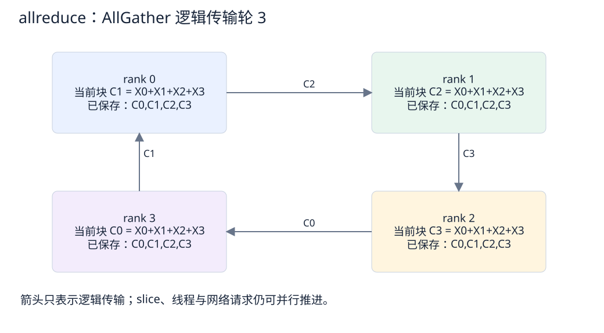
从一个块看，例如C0：rank1发X1(C0)→rank2加X2→rank3加X3→rank0加X0后成为完整结果，再复制到1、2、3。总共6条逻辑传输边，恰好是2(P-1)。最终“每rank都有结果”是第二阶段的效果，不是第一阶段每个rank都重复完成一遍所有块的归约。
9. AllGather与ReduceScatter：相似外形，不同语义
9.1 AllGather没有归约
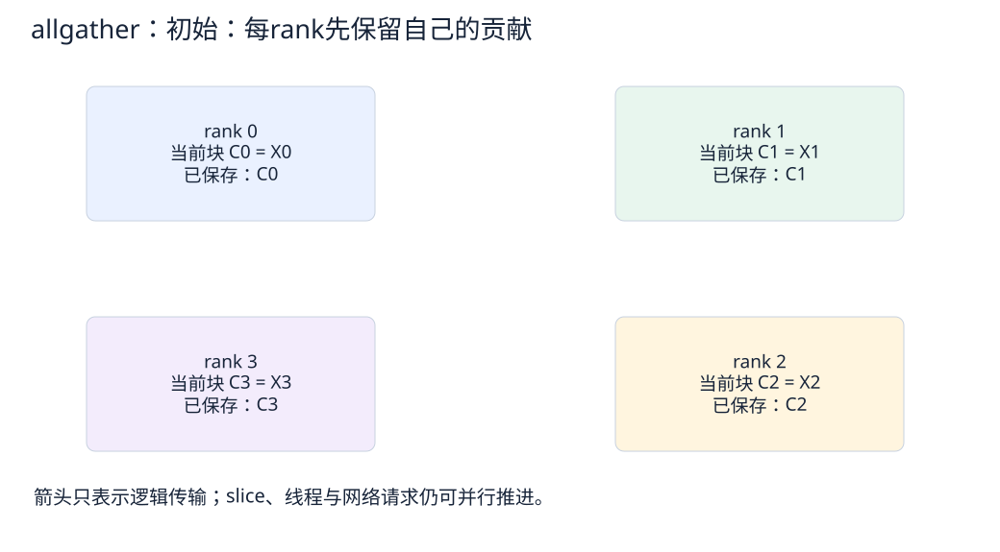
每rank仅贡献一段，输出按贡献者用户rank排列。环顺序可优化，但 offset=chunkOffset+rankDest×size 保持用户布局。自己贡献已在正确输出段时可直接发，否则copySend同时保留本地；中间recvCopySend；最后recv。
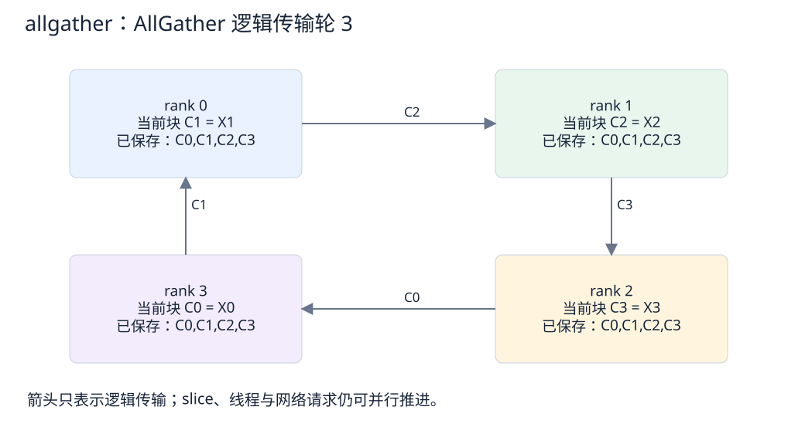
X0、X1、X2、X3只是相邻拼接，不能把X0+X1画成求和结果。公开sendcount=8 float时，ArgsCheck后设备size=32字节、总模型nBytes=128字节（4rank）；该复制API使用Int8。
9.2 ReduceScatter归约后只保留本段
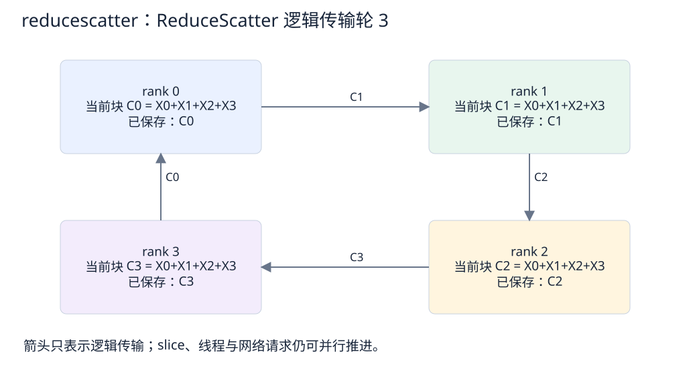
公开recvcount=8 float时，每rank输入32 float、输出8 float。设备size仍为8个float；访问输入时加 rankDest×size，输出只写自己的 chunkOffset。它不继续传播其他rank的完整结果，所以rank2得到全局归约结果中的第2段，而不是一个没有归约的原始输入段。
Ring AllReduce在单个设备算法中融合类似RS和AG的过程，并非主机真的先调用公开ReduceScatter再调用AllGather。
10. Broadcast与Reduce：在root处切断环
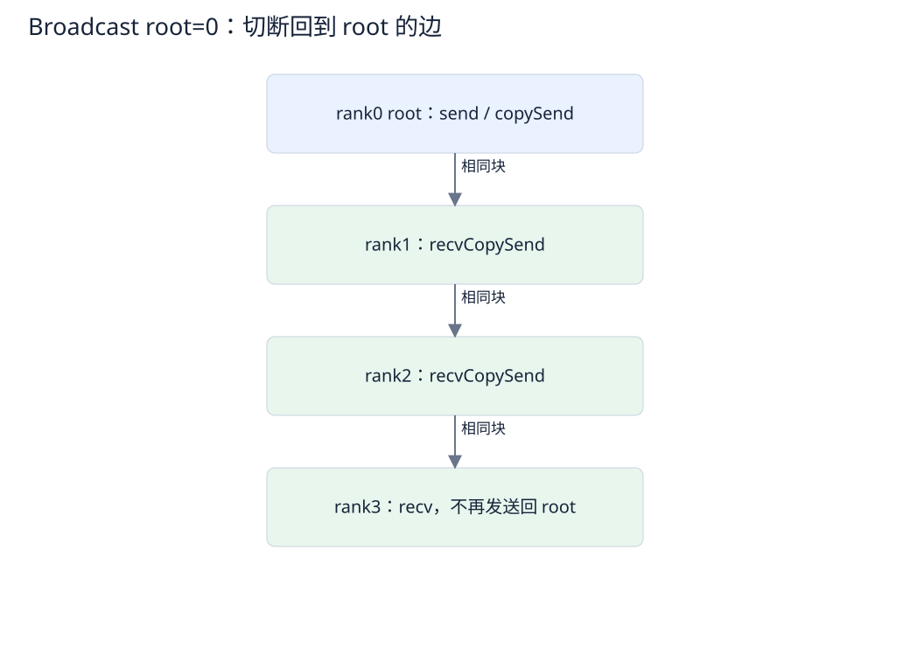
Broadcast root=0，只有root提供有效输入。root是send/copySend，中间rank保存并继续发，root前驱只recv，不发回root。各slice仍可流水，图中纵向顺序只表示单块依赖。
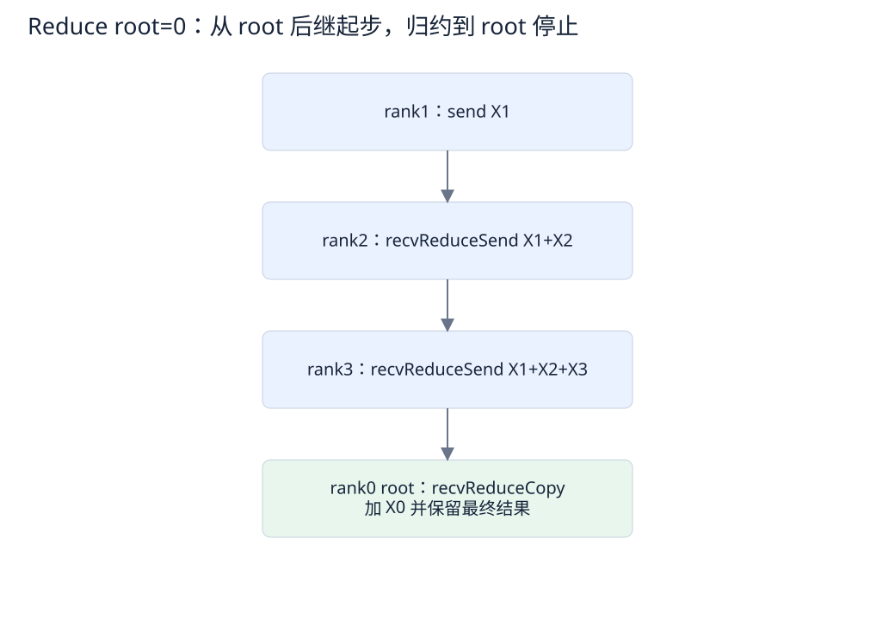
Reduce root=0从root后继rank1发起。rank2、3边收边加本地贡献，root最后加X0并存输出；结果只要求root有效，不再广播给所有人。
本版对应设备文件主要提供Ring特化。调度代码存在TreeUp/TreeDown的pattern名字，不能由枚举就推断这里有完整Tree Broadcast/Reduce设备实现。Tree图下面专门解释AllReduce路径。
11. Tree AllReduce与CollNet：改变依赖结构
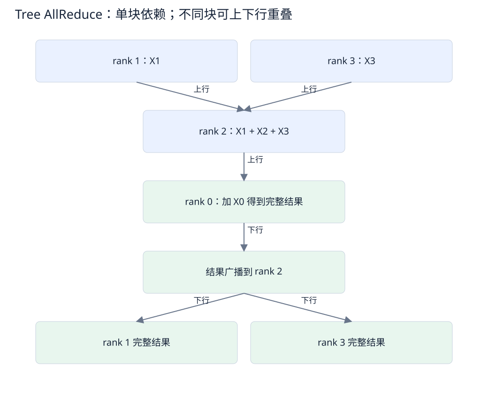
这是一棵4rank树的单块依赖示例：0为根、2为根的孩子、1和3为2的孩子。叶先send，中间节点多收一发归约，根完成结果，再向下传播。实际邻居由该channel的tree.up/down给出，不能把图中rank连接当成所有机器固定拓扑。
runTreeUpDown先完整上行再下行。runTreeSplit让非根的两个线程组分别服务上行和下行，组号/屏障分开，所以前一块下行可与后一块上行重叠。根用融合收、归约、复制、多目标发送衔接两个方向。源码另有CUDA版本/架构条件决定使用哪条实现，不能把Split当作永远启用。
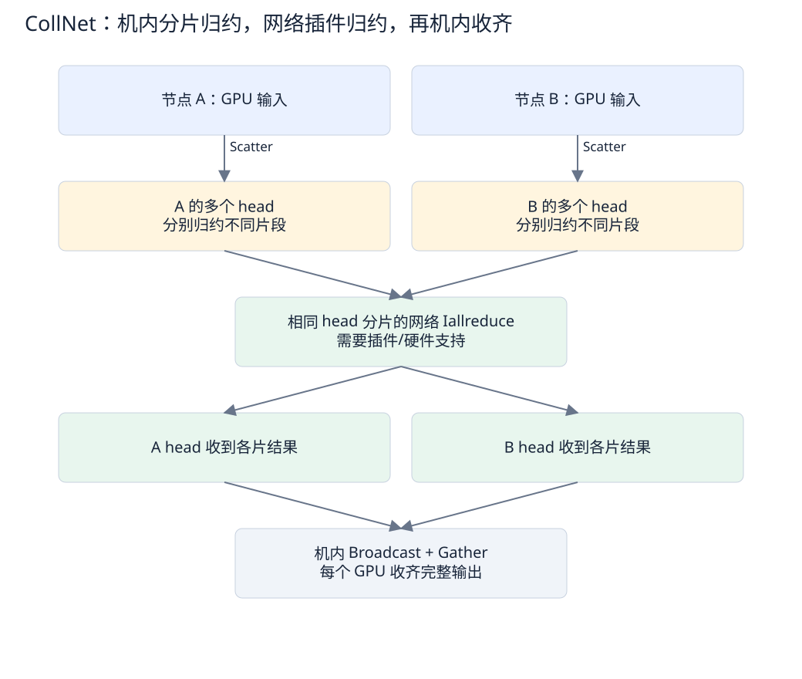
CollNet多出head分工：每个head负责不同张量片段，机内先Scatter/Reduce，网络插件对相同分片做Iallreduce，再Broadcast/Gather让机内每GPU收齐。loopSize=C×nHeads×chunkSize反映head维度。GPU代码按Scatter/Reduce/Gather/Broadcast线程组分工，不是全部线程顺序执行四段。
本版CollNet数据面仅Simple，要求插件/硬件和归约类型支持。不能用普通NET的Isend/Irecv图替代网络集合归约，也不能把普通IB QP总数直接当成交换机已支持硬件归约的证据。
12. Send/Recv及上层All-to-All
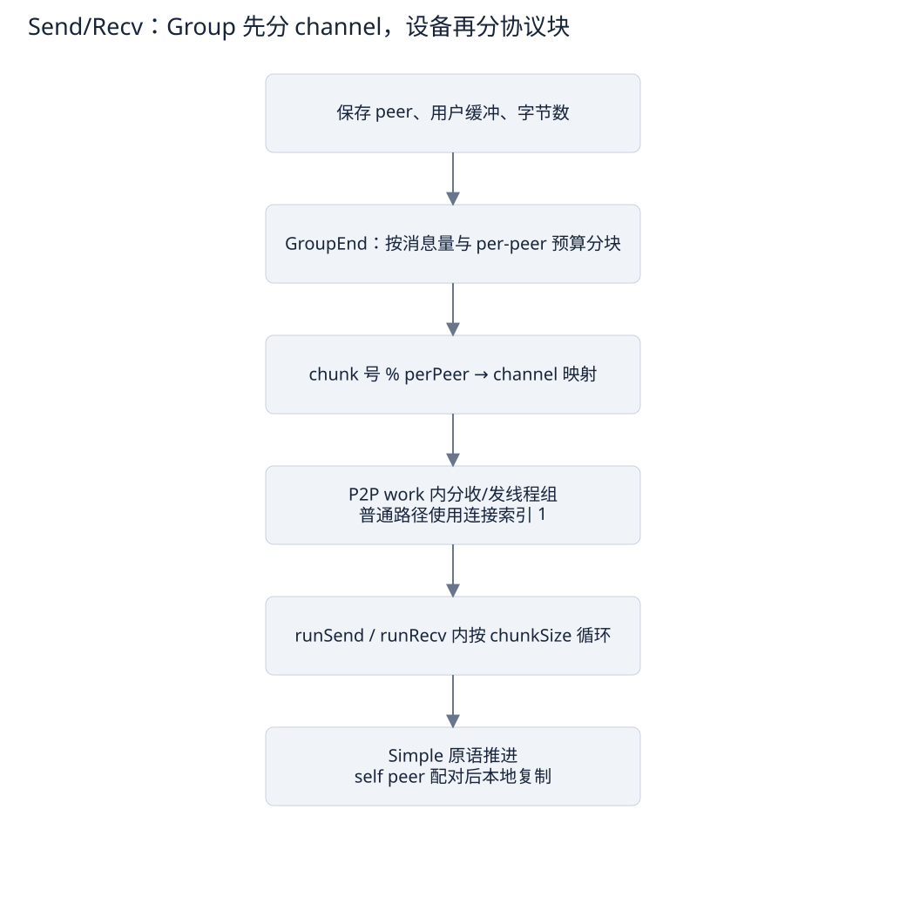
ncclSend/Recv内部套Group，外层应用也可以Group组合多个peer。SaveP2p按peer保存缓冲与字节数，并标记缺失的索引1连接；GroupEnd先预建链，再按节点距离/节点内序号一致地排收发，避免双方以不匹配次序各自等待。
第一层切块由getP2pChunkSize决定：每peer预算和总channel数量限制并行度，消息过大时可倍增所用channel，最后按step对齐。第二层在设备runSend/runRecv按chunkSize继续循环。零字节是同步语义，代码用do-while确保仍推进一次，不能与-1“无此方向任务”混同。
self peer需要匹配的send/recv元素，由发送组把输入复制到接收组缓冲，接收组不再重复搬运。非self使用Simple原语，连接能力决定走GPU P2P、SHM还是NET。
本版没有公开AllToAll/Gather/Scatter API；上层可以Group组织多peer Send/Recv来表达这些模式。其资源与调度取决于实际peer集合，不能把一个Ring邻居数拿来代表全互联模式。
13. Proxy与原语之间如何持续推进
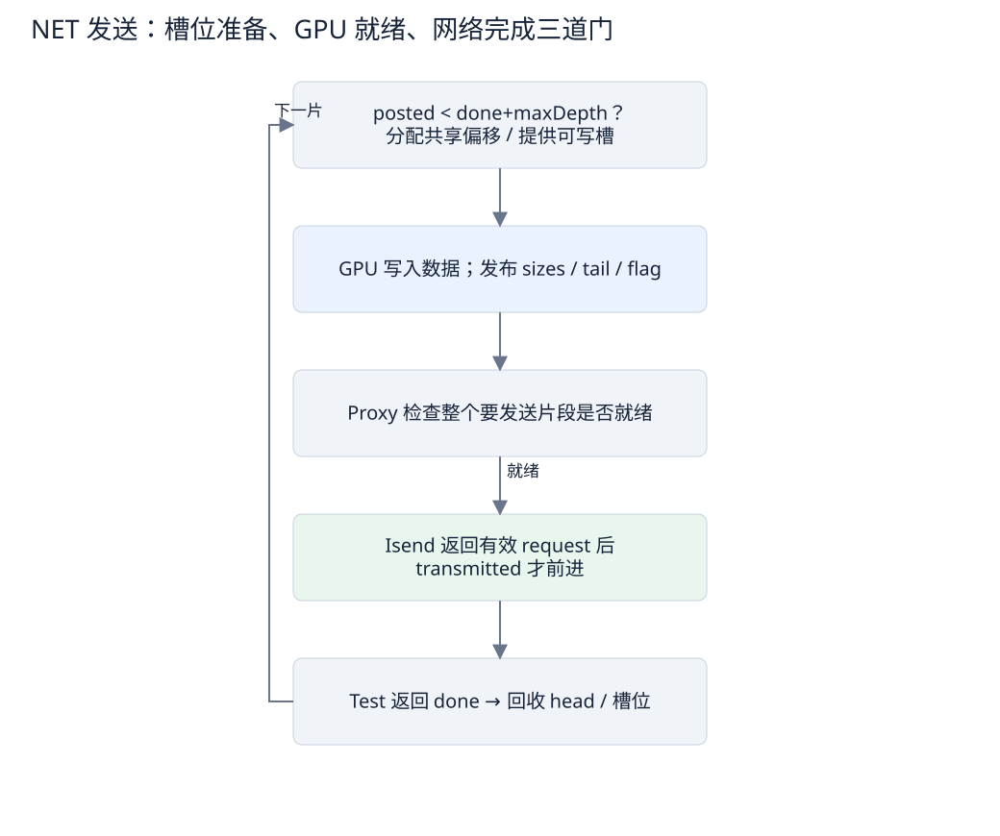
发送三道门：Proxy先提供槽位；GPU按原语生成有效数据并写sizes/tail或行flag；Proxy确认就绪才Isend。request非空后transmitted增加，Test完成后done增加并允许回收空间。Isend返回成功本身不允许GPU立刻覆盖NIC仍在读的缓冲。
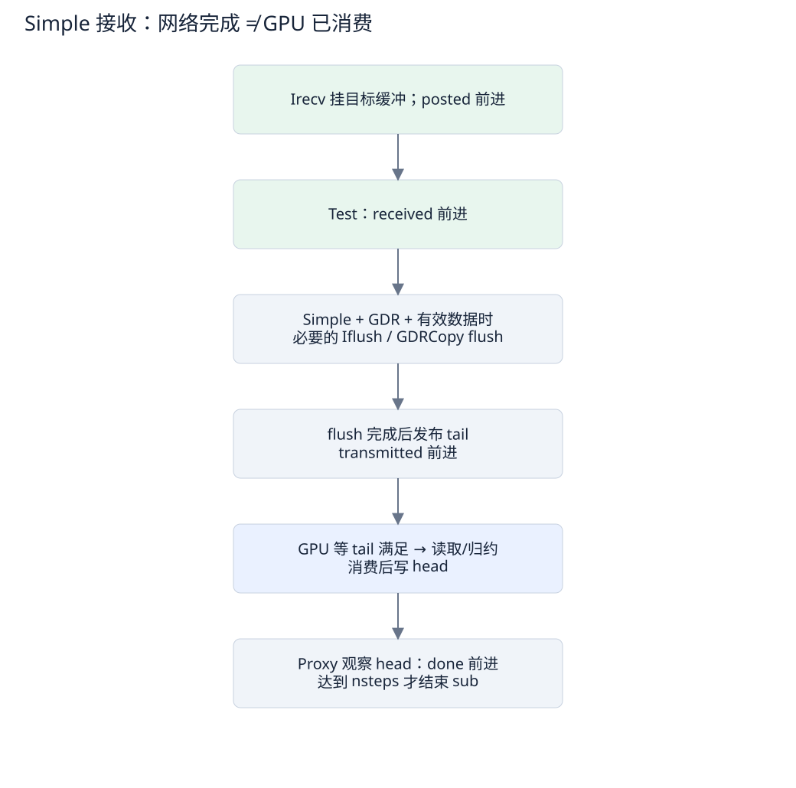
接收四道门：挂Irecv、网络Test完成、必要GDR可见性flush、GPU消费后head确认。网络完成后received前进，不代表GPU已经读取；flush完成后发布tail，GPU才能在等待满足后消费；消费再让done前进。下列三个“完成”不能互换：后端request完成、GPU可以读、GPU已读并释放。
共享NET接收把同recvComm子项聚合交给Irecv，仍按maxRecvs上限组织；它是接口批量提交，不是verbs SRQ。GPU工作与Proxy工作必须对齐协议、连接和总步数，否则常见现象是一侧等tail、另一侧等sizes或CQ，表面上都在“忙”。
14. 对每个函数怎么读内部逻辑
源码的 中文内部逻辑 F编号 给出按函数体顺序的关键步骤；完整嵌套分支/循环在 函数内部索引 的对应页面。它们逐项区分条件、循环初始化/继续/增量、数据写入、调用、return/goto/break/continue，不把if和else画成都会执行。
这些内部步骤是源码结构展开，配合上面人工拆解的协议语义来读。C++宏展开、模板特化、编译期条件与函数指针仍需结合具体配置；静态图不是CUDA指令时序，也不构成多线程无竞态的自动证明。解析器不能可靠拆分的片段会保留原文并标记，不能冒充已经验证的控制流。